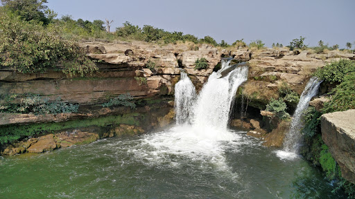
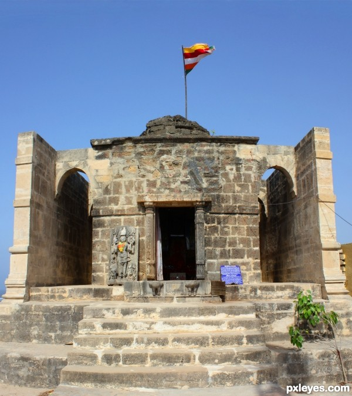

Top things to do

The Gir Subsidiary
With all the greens you are going to see along the roads that lead here, the Gir locations around the city are by far the most breathtaking

The Religious Locations
Kodinar has lot of religious places one can visit. Some places are even deep in the woods!
The Industrial Arena
Two biggest industries of India - Shapoorji Pallonji & Ambuja Cement. With many other people powered projects.